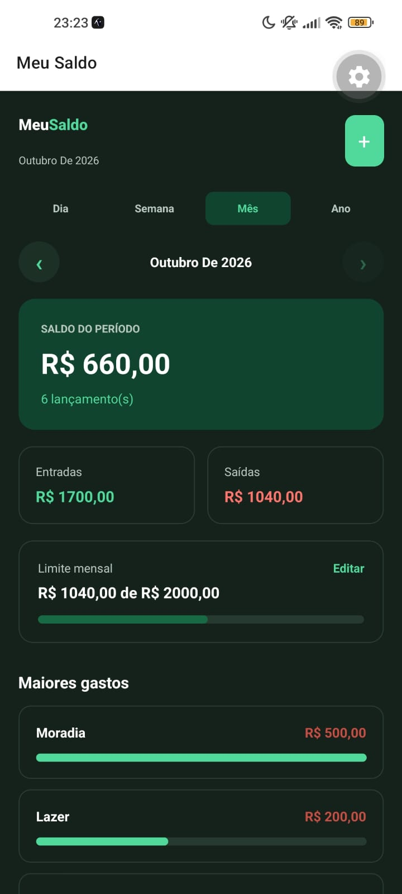
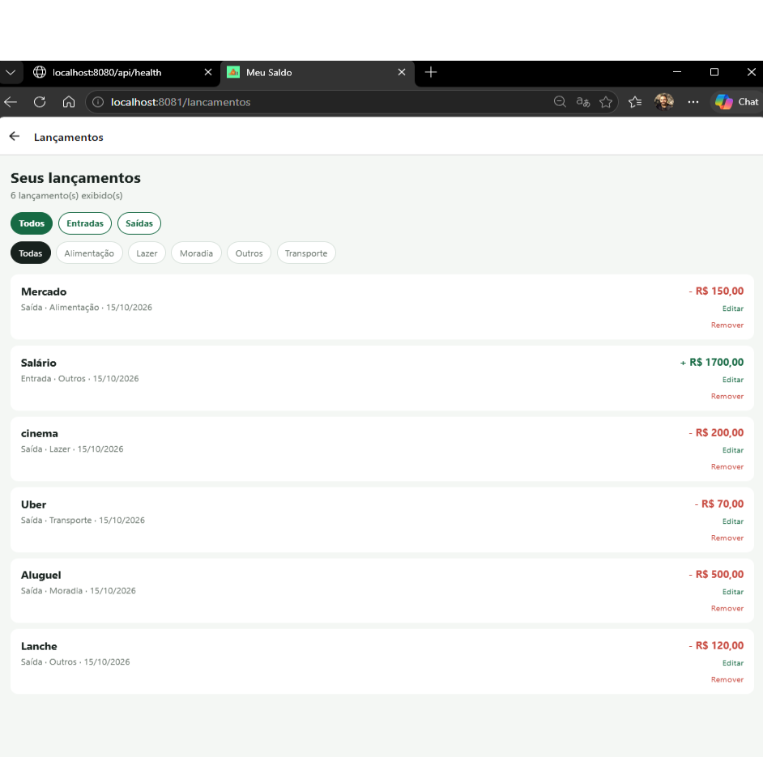
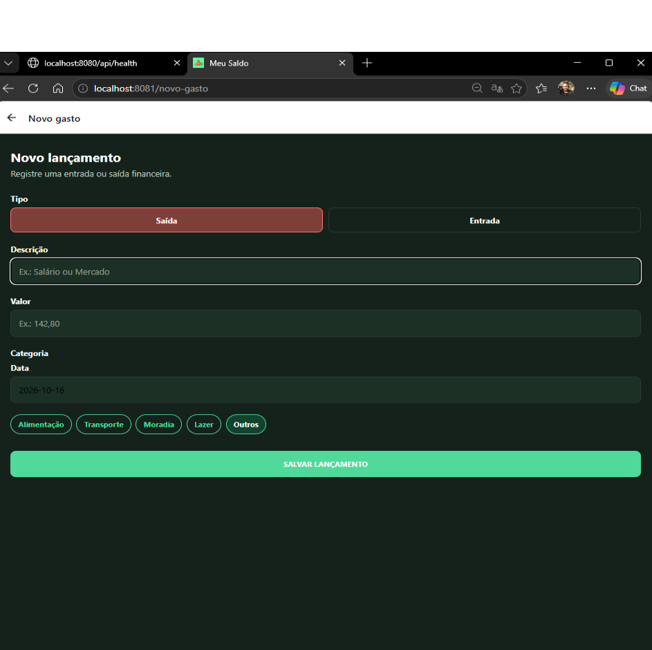
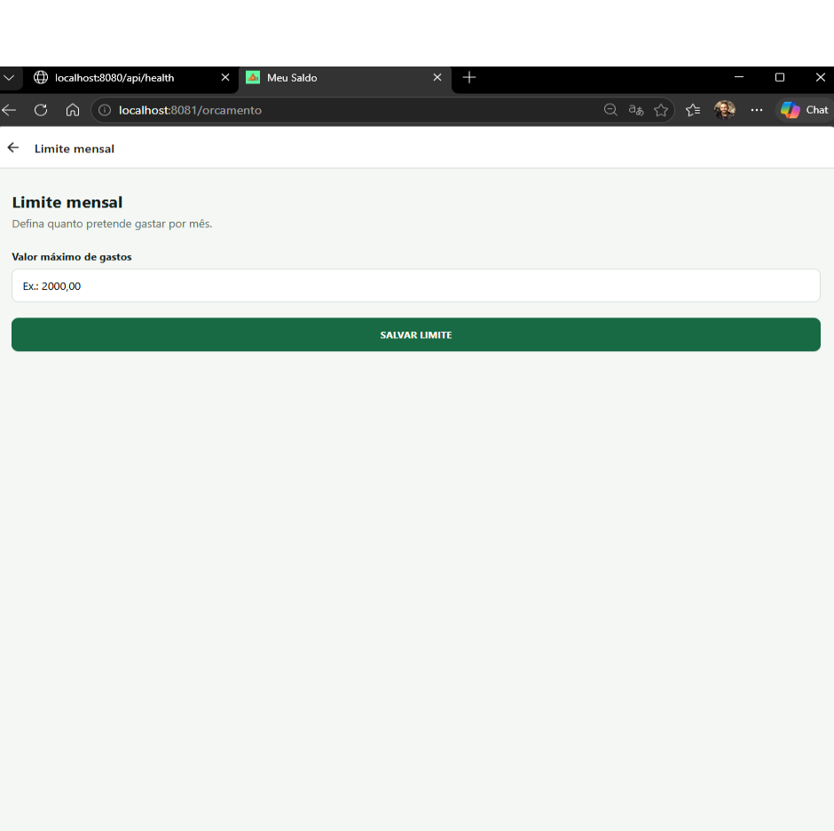
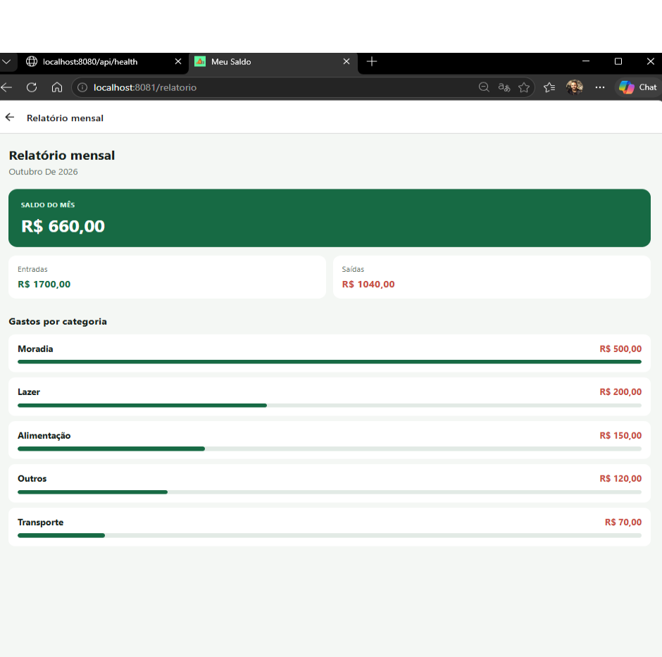

PROJETO ACADÊMICO · UERJ/ZO
Meu Saldo.
Aplicativo móvel para acompanhar receitas, despesas, limites mensais e relatórios financeiros.
DISCIPLINA
Programação para Dispositivos Móveis
Análise e Desenvolvimento de Sistemas · UERJ/ZO
01 / SOBRE O PROJETO
Finanças pessoais no celular.
O Meu Saldo é um projeto acadêmico composto por um aplicativo multiplataforma em React Native/Expo e uma API REST em Java/Spring Boot.
O app permite registrar e editar entradas e saídas, consultar saldos por período, definir um limite mensal e visualizar relatórios e gastos por categoria. A API persiste os dados em H2.
02 / TELAS DO APLICATIVO
Veja o Meu Saldo em uso.





Capturas do projeto com dados de demonstração.
03 / TECNOLOGIAS
Aplicativo e API.
Para executar, consulte o README no repositório. Esta página apresenta o projeto; o aplicativo requer ambiente Expo e API em execução.